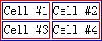

BT3003: 只有 IE 支持 TABLE 元素的 'bordercolordark' 和 'bordercolorlight' 属性
标准参考
无。
问题描述
只有 IE 支持 'bordercolordark' 属性和 'bordercolorlight' 属性
造成的影响
非 IE 浏览器使用 'bordercolordark' 属性和 'bordercolorlight' 属性页面没有相应效果
受影响的浏览器
| IE6 IE7 IE8 |
|---|
问题分析
在 IE 下允许在一个 TABLE 中设置两种不同的边框颜色，'bordercolordark' 设置外边框的 'right' 和 'bottom' 颜色及内边框的 'top' 和 'left' 颜色, 'bordercolorlight' 设置外边框的 'top' 和 'left' 颜色及内边框的 'right' 和 'bottom' 颜色。（参考 这篇文章）。
TABLE 元素的 'border-collapse' 属性，默认值是 'separate'。当 border="1" 时，在页面看起来就像有两个边框，一个外边框，一个内边框。
更多参考：
在 MSDN 中，'bordercolordark' 说明参见：http://msdn.microsoft.com/en-us/library/ms533514(v=VS.85).aspx。
在 MSDN 中，'bordercolorlight' 说明参见：http://msdn.microsoft.com/en-us/library/ms533515(VS.85).aspx。
在 HTML4.01 中，TABLE 中 'border' 说明参见：http://www.w3.org/TR/html401/struct/tables.html#h-11.3.1。
测试代码：
<table border="1"
bordercolorlight="red"
bordercolordark="blue">
<tr>
<td>Cell #1</td>
<td>Cell #2</td>
</tr>
<tr>
<td>Cell #3</td>
<td>Cell #4</td>
</tr>
</table>
以上代码在各浏览器中效果如下：
| IE6 IE7 IE8 | Firefox Safari Chrome Opera |
|---|---|
|  |  |
解决方案
这两个属性为 IE 私有属性，并且 MSDN 官方文档上也不再推荐使用它们。所以，若要达到这两个属性的效果,可以在 TABLE 和 TD 元素上使用 "border-color" 。
参见
知识库
相关问题
测试环境
| 操作系统版本: | Windows 7 Ultimate build 7600 |
|---|---|
| 浏览器版本: |
IE6 IE7 IE8 Firefox 3.6 Chrome 4.0.302.3 dev Safari 4.0.4 Opera 10.51 |
| 测试页面: | table_border.html |
| 本文更新时间: | 2010-07-15 |
关键字
TABLE bordercolorlight bordercolordark